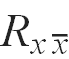
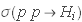
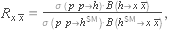
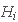
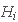
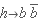
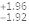
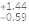
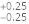
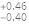

SPACE MATH TUTORIAL
Signal strength modifiers 
For a production process  and a decay  , the signal strength is defined as follows:
, the signal strength is defined as follows:

where  is the production cross section of , with
is the production cross section of , with  , here is the SM‐like Higgs boson coming from an extension of the SM and
, here is the SM‐like Higgs boson coming from an extension of the SM and  is the SM Higgs boson;
is the SM Higgs boson;  is the branching ratio of
is the branching ratio of  decaying into a where
decaying into a where  . In addition, we consider the production of
. In addition, we consider the production of  via gluon fusion and we use the narrow width approximation:
via gluon fusion and we use the narrow width approximation:
In this version of  we only consider the Higgs boson production cross section via gluon fusion and we use the narrow width approximation:
we only consider the Higgs boson production cross section via gluon fusion and we use the narrow width approximation:
In the Table signalvalues we show the best fit, at  , on the signal strength.
, on the signal strength.
| Signal strength | ||
| ggh | Best fit value | Uncertainty stat. Uncertainty syst |
| 
|  
 
|
Best fit value and  uncertainties for the Higgs boson production via gluon fusion and decay modes.
uncertainties for the Higgs boson production via gluon fusion and decay modes.